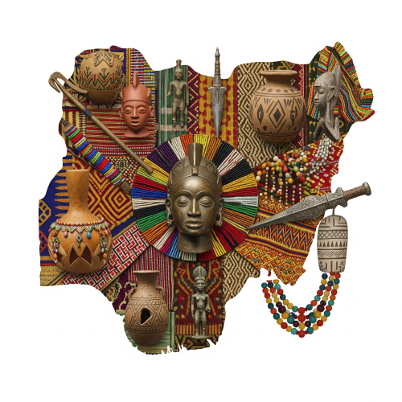
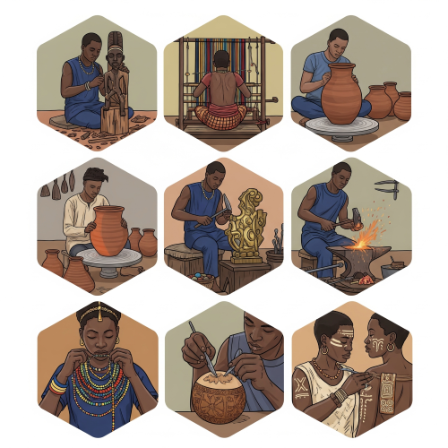

NIGERIA TRADITIONAL ART
Meaning of Traditional Art
Traditional art is the kind of art that people in Nigeria practiced long ago, before the coming of modern or foreign art. It is the local art made by different tribes across Nigeria. This type of art shows the culture, beliefs, and way of life of the people.

Traditional art was not just made for decoration. It was used in religion, festivals, leadership, and other parts of life.
Features of Nigerian Traditional Art
- It is useful – not just for beauty, but for worship, respect, or records.
- It is symbolic – it carries messages or spiritual meanings.
- It is handmade – done by skilled local artists using simple tools.
- It is often anonymous – the artist’s name is not always known.
- It is stylized – the shapes may not be real, but they show ideas like power or beauty.
- It is cultural – each tribe has its own style and use.
Forms or Types of Traditional Art in Nigeria
The is about the different forms of traditional art in Nigeria, including sculpture, textiles, and pottery. It explores how ancient Nigerian people created these artworks as part of their daily life and culture.

- Sculpture: Sculpture is the art of making figures out of clay, bronze, wood, or stone. In Nigeria, many old cultures made beautiful sculptures.
- Nok Art: Made of terracotta (baked clay), found in Kaduna and Plateau. The figures have big heads and detailed features.
- Ife Art: Yoruba people made natural-looking heads and figures in bronze and stone.
- Benin Art: Edo people made bronze and ivory artworks. They made plaques that showed kings, warriors, and chiefs.
- Esie Art: Found in Kwara State. The figures are made of soapstone and mostly seated.
- Tsoede/Bida Art: Found among the Nupe in Niger State. They used brass and bronze to make figures.
- Pottery : Pottery is the making of clay pots. It is mostly done by women in villages. Pots are used for cooking, fetching water, and traditional ceremonies. Tribes like the Gwari, Nupe, Igbo, and Yoruba are known for pottery.
- Textiles : This is the art of making clothes from threads or dyeing cloth. Types of traditional Nigerian textiles include:
- Aso-Oke – Yoruba woven cloth.
- Adire – Yoruba tie and dye.
- Akwete – Igbo woven cloth.
- Okene Cloth – Ebira woven cloth.
These are used for special events like weddings and festivals.
- Metalwork : This includes making tools, weapons, ornaments, and ritual items from iron, bronze, and brass. It was common in places like Ife, Benin, and Awka (Anambra State).
- Beadwork : Beads are used to make necklaces, bracelets, crowns, and clothes. They are worn by kings and queens, and used for decoration and beauty.
- Calabash Decoration : Calabashes are dry gourd shells. People carve or paint them for use in homes, festivals, or music. Common among Fulani, Hausa, and Yoruba people.
- Body Decoration : Body art includes tattooing, scarification (marking the skin), painting, and wearing beads. These marks can show tribe, age group, or beauty.
Functions of Nigerian Traditional Art
- used for worship in shrines and during rituals.
- used in festivals, dances, and traditional ceremonies.
- kings and chiefs use art to show power (e.g., thrones, crowns).
- teaches culture, beliefs, and history.
- used to record past events (like Benin bronze plaques).
- artworks are sold for money or traded.
Materials Used in Traditional Art
- Clay (terracotta)
- Wood.
- Ivory.
- Bronze and brass.
- Stone (soapstone).
- Cloth (cotton, raffia).
- Beads.
- Calabash.
- Natural dyes (like camwood, indigo) .
Tools Used Used in Traditional Art
Artists use simple tools like:
- Knives and chisels.
- Hammers and mallets.
- Moulds.
- Kilns (for burning clay or metal).
- Weaving looms.
Major Traditional Art Centers in Nigeria
|
Location |
Known For |
| 1 |
Nok (Kaduna/Plateau) |
Terracotta figures |
| 2 |
Ife (Osun State) |
Bronze and stone heads |
| 3 |
Benin (Edo State) |
Bronze plaques and ivory carving |
| 4 |
Esie (Kwara State) |
Soapstone sculptures |
| 5 |
Bida (Niger State) |
Brass figures |
| 6 |
Akwete (Abia State) |
Textile weaving |
| 1 |
Zaria (Kaduna State) |
Leatherwork, calabash design |
How to Preserve Nigerian Traditional Art
- Keeping art in museums.
- Teaching art in schools.
- Holding cultural festivals.
- Training young people in traditional crafts.
- Using traditional styles in fashion and building.
Problems Facing Traditional Art
- Modernization and foreign culture making youth lose interest.
- Lack of government support.
- Fake versions of artworks.
- Damage due to poor storage.
- Few people still learning traditional skills.
Importance of Traditional Art
- Traditional art helps us to Understand and keep our culture.
- Traditional art Show beauty and creativity.
- Traditional art Teach history and values.
- Traditional art Create jobs and income.
- Traditional art Build pride in who we are as Nigerians.